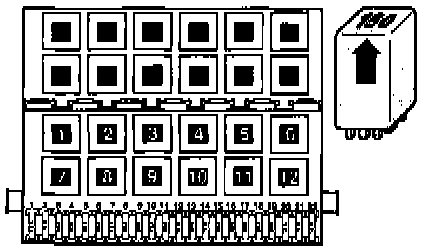

Transmission Position Relay: Description and Operation
PARK / NEUTRAL POSITION RELAY -J226-Start Inhibitor And Reverse Light Relay:

The Park / Neutral Position (PNP) Relay is a combined relay.
- The reversing relay switches the reversing lights.
- The starter relay makes starting possible only in P and N.

The PNP Relay is marked with number "150" (arrow).